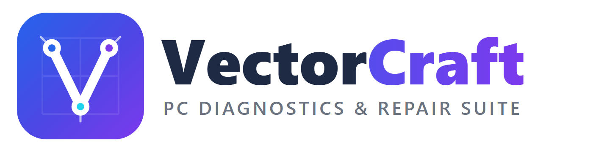
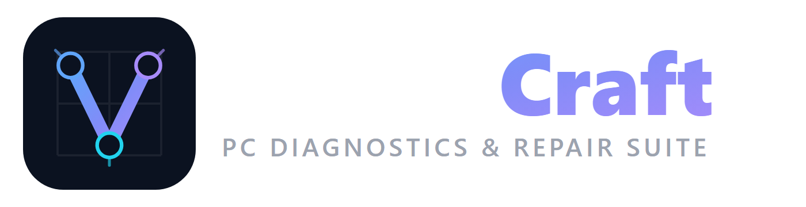
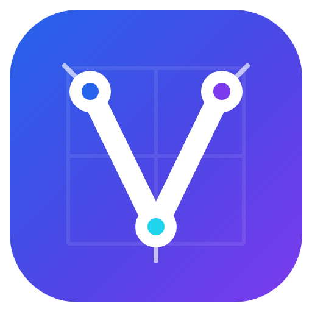

Logo, icônes et couleurs officielles du logiciel · ∞ Infinity Coder — Derouiche Oussama



Déclinées : 256 · 64 · 48 · 32 · 16 px + Windows-Toolbox.ico (intégrée à l'EXE)
Concept : le « V » tracé comme un tracé vectoriel — points d'ancrage et poignées de Bézier — sur grille blueprint.
logo-icon.svg · logo-wordmark.svg · logo-dark.svg (vectoriels, redimensionnables à l'infini).
Utilisation : icône EXE/raccourcis (Windows-Toolbox.ico), en-têtes de documents, page GitHub,captures d'App Store.